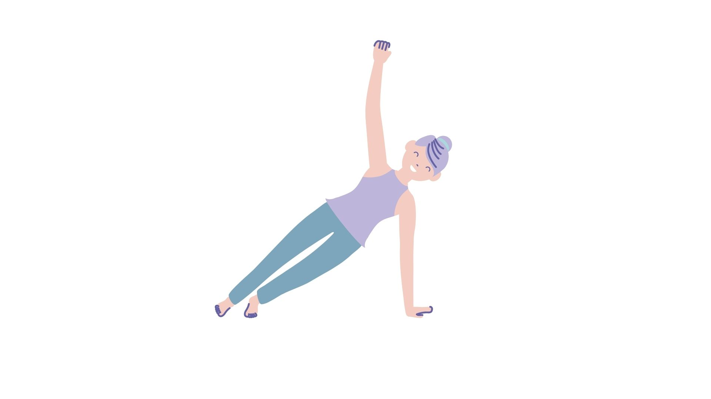
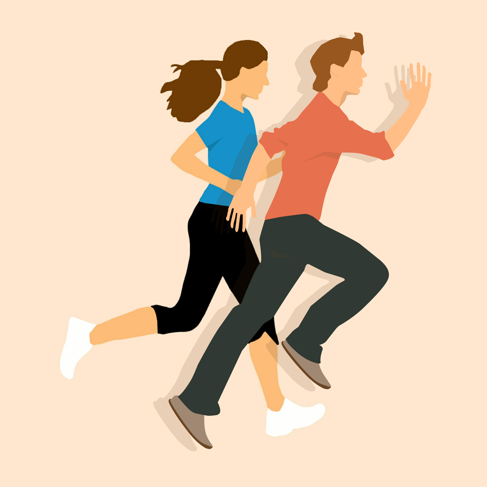

Garder la pêche, garder le noyau de votre santé
Les bienfaits de l’activité sportive sur la santé physique
"Au-delà des améliorations évidentes de la performance sportive et de la condition physique,
la pratique régulière du sport est incroyablement efficace pour la prévention de nombreuses maladies chroniques, cardiovasculaires, ou encore dégénératives".
LA CORDE À SAUTER

DU GAINAGE POUR TRAVAILLER SES ABDOMINAUX

COURSE A PIED

- La totalité du corps est sollicitée.
- La course muscle le cœur, libère des endorphines (sensation de bien-être), aide à diminuer le stress.
- La course favorise une musculature fine et harmonieuse.
- Elle favorise la perte de poids en raison d'une dépense calorique importante.
- Elle peut se pratiquer n'importe où et au moment de votre choix.
- Elle peut s'exercer aussi bien à l'extérieur qu'en salle, sur un tapis.
- La course sollicite le système cardio-respiratoire et entraîne une endurance accrue.
- Ce sport d'endurance est particulièrement réputé pour ses effets anxiolytiques et les bénéfices qu'il apporte sur le plan de l'humeur.
- Courir forge le mental, la confiance en soi !